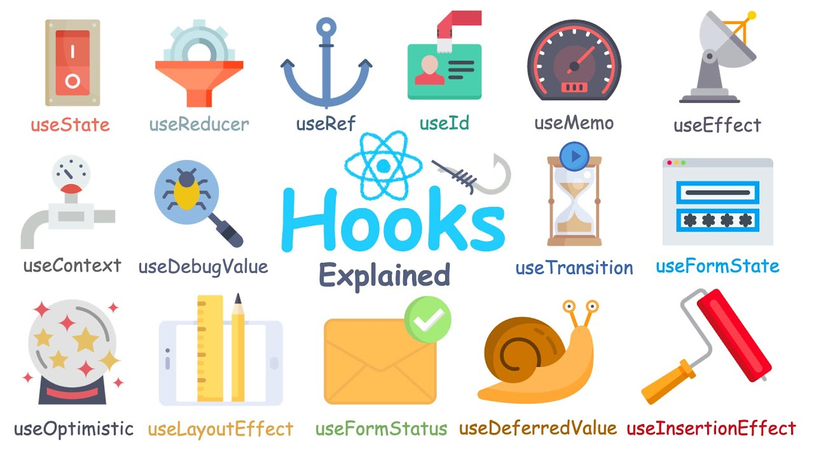
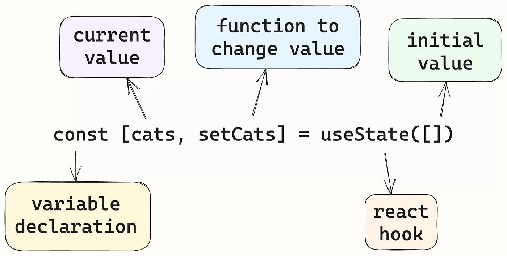

Web Application Development
CSC13008-23KTPM1
Note 06 - React
Lecturer: Đỗ Nguyên Kha
Semester 1/2025-2026 @ FIT-HCMUS
Content
- Virtual DOM
- Component
- JSX
props- Handling Events
- Hooks
useStateuseEffect
Introduction to React
React’s declarative and component-based approach offers solutions to the challenges faced when using plain JavaScript for dynamic UIs.
const App = () => {
const handleClick = () => {
alert("Button Clicked!");
};
return (
Welcome to React
);
};
Virtual DOM
The real DOM is the actual DOM tree that the browser renders and displays to the user. This means any changes made to the real DOM are immediately reflected on the user's screen, but direct manipulation can be inefficient for complex or frequent updates due to the performance cost of re-rendering the UI.
Virtual DOM
1. Initial real DOM
Examine the starting point of our application by viewing the initial HTML structure rendered in the browser. In this step, the initial real DOM rendered by the browser is created.
Hello
React
Virtual DOM
2. Initial rendering and virtual DOM creation
In this step, React creates a virtual DOM that mirrors the initial real DOM.
const virtualDOM = {
type: 'div',
props: {},
children: [
{
type: 'h1',
props: {},
children: ['Hello'],
},
{
type: 'h2',
props: {},
children: ['React'],
},
],
};
Virtual DOM
3. UI update triggered
Next, update the UI by adding a new header element:
Hello
React
Element
Virtual DOM
4. Updated virtual DOM creation
In this step, React creates an updated virtual DOM that includes the new header element.
const updatedVirtualDOM = {
type: 'div',
props: {},
children: [
{
type: 'h1',
props: {},
children: ['Hello'],
},
{
type: 'h2',
props: {},
children: ['React'],
},
{
type: 'h3',
props: {},
children: ['Element'],
},
],
};
Virtual DOM
5. Diffing the virtual DOMs
React now compares the initial and updated virtual DOMs to identify what has changed. React uses it's diffing algorithm to determine the differences between the two virtual DOMs by:
- Comparing each node in the initial and updated virtual DOMs.
- Identify any additions, deletions, or modifications.
Virtual DOM
6. Identifying changes
After diffing, React determines the specific changes needed. It reviews the findings of the diffing process to see what updates are necessary.
- Unchanged nodes:
<h1>Hello</h1>and<h2>React</h2> - New node detected:
<h3>Element</h3>
Virtual DOM
7. Updating the real DOM
React updates the real DOM by applying changes identified during the diffing process, inserting the new element (<h3>Element</h3>) into the real DOM under the existing <div> element.
Hello
React
Element
Virtual DOM

JSX (JavaScript XML)
React solves this problem with JSX, a syntax that lets us describe the structure of our UI in a concise, HTML-like format while seamlessly integrating JavaScript logic. It's an optional syntax extension for JavaScript that looks like HTML but is compiled into JavaScript. It allows us to write UI code in a way that’s intuitive and closer to how our UI will look in the browser.
const element = Hello, JSX!
;
const element = React.createElement('h1', null, 'Hello, JSX!');
Rendering lists in JSX
React solves this problem with JSX, a syntax that lets us describe the structure of our UI in a concise, HTML-like format while seamlessly integrating JavaScript logic.
const items = ['React', 'JSX', 'Components'];
const elements = (
{items.map((item) => (
- {item}
))}
);
const root = ReactDOM.createRoot(document.getElementById('root'));
root.render(elements);
createRoot
The createRoot method takes one argument: Where to render - A DOM node in the HTML document where the React content will be displayed.
Once the root container is created, the render method takes: What to render - A React element or JSX expression that describes the UI.
Typically, React applications render their content inside a single HTML container, often an element with the ID root.
createRoot
Even though React components are the preferred way to handle dynamic updates, we can manually call the render method
multiple times to update content. Each call replaces content in the DOM node.
let counter = 0;
const root = ReactDOM.createRoot(document.getElementById('root'));
function updateCounter() {
root.render(Counter: {counter}
);
}
// Initial render
updateCounter();
// Simulate updates
setInterval(() => {
counter++;
updateCounter();
}, 500);
Exercise
- Display current date and time dynamically
Component

Component
// Greeting component
function Greeting() {
return Hello, World!
;
}
// Footer component
function Footer() {
return © 2025 CSC13008-23KTPM1
;
}
// App
function App() {
return (
<Greeting/>
<Footer/>
);
}
StrictMode
React StrictMode is a development-only tool that helps identify potential problems and enforce best practices in React
applications. It does not affect the UI or production build but enables additional checks and warnings to catch common
bugs and improve code quality early.
Passing props to Components

Passing props to Components
props (short for “properties”) are a mechanism for passing data from a parent component to a child component. They allow
components to be dynamic and reusable by enabling them to receive input data and render accordingly.
function Message(props) {
return {props.text}
;
}
function App() {
return (
<Message text="Hello, World!" />
<Message text="Welcome to React." />
<Message text="Props are awesome!" />
);
}
Passing multiple props
function Message(props) {
return <p style={{ color: props.color }}>{props.text}</p>;
}
function App() {
return (
<Message text="Hello, World!" color="red" />
<Message text="Welcome to React." color="green" />
<Message text="Props are awesome!" color="blue" />
);
}
Exercise
- Create the
UserCardcomponent
Styling Components
In React, there are three ways to apply styles to our components:
- Using CSS stylesheets
- Inline styles
- CSS modules
Styling Components
<div className="hello">Using CSS stylesheets </div>
Styling Components
const inlineStyle = {
backgroundColor: '#282c34',
padding: '20px',
color: 'white',
textAlign: 'center',
};
return (
Styling Component
<div style={inlineStyle}>Inline styles</div>
<div style={{ color: 'white' , fontSize: '18px' , backgroundColor: 'navy' , fontWeight: 'bold' }}>Inline styles</div>
);
Handling Events
React handles events similarly to how events are handled in regular HTML and JavaScript, but with some syntactical differences
Use camelCase (e.g., onClick, onChange) and pass a function reference as the event handler, not a string.
<button onClick={handleClick}>Click Me</button>
Handling Events
onClick: Triggered when an element is clicked.onChange: Triggered when the value of an input element changes.onSubmit: Triggered when a form is submitted.onMouseOver: Triggered when the mouse pointer moves over an element.onFocus/onBlur: Triggered when an element gains or loses focus.
Handling Events
To pass arguments to our event handlers, wrapping the event handler in an arrow function.
function App() {
function handleClick(message) {
alert(message);
}
return (
<button onClick={() => handleClick('Button clicked!')}>Click Me</button>
);
}
Handling Events
Forms are integral to web applications. React simplifies handling form inputs and submissions.
function App() {
function handleChange(event) {
console.log('Input value:', event.target.value);
}
return (
<input
type="text"
onChange={handleChange}
placeholder="Type something..."
/>
);
}
Handling Events
Sometimes, we may need to prevent the default action of an event, such as preventing a form from submitting and refreshing the page.
function App() {
function handleSubmit(event) {
event.preventDefault();
alert('Form submitted!');
}
return (
<form onSubmit={handleSubmit}>
<input type="text" placeholder="Enter your name" />
</form>
);
}
Handling Events
We can pass event handlers to child components via props, promoting modularity and reusability.
Exercise
- Render TODO using React
Hooks
React hooks are special functions that let us use state and other React features without writing class components. The primary goal is to simplify how we manage data (state) and tasks like fetching data, updating the browser title, or running timers (effects) inside the UI components. By using hooks, our functional components can become more powerful while remaining concise and easy to read.
Hooks

Source: https://www.youtube.com/watch?v=LOH1l-MP_9kThe useState hook
By adding useState, the component now maintains its own data and reacts to user actions, transforming from a static,
“read-only” UI into a dynamic, “interactive” one. All this is done without using class components.
function InteractiveGreeting() {
const [message, setMessage] = React.useState("Hello, welcome to our React application!");
function handleClick() {
setMessage("Thanks for clicking, have a great day!");
}
return (
{message}
<button onClick={handleClick}>Click me</button>
);
}
The useState hook

Source: https://www.kaashivinfotech.com/blog/usestate-in-react-js-guide-examples/Exercise
- Click counter
- Toggle text visibility
- Real-time character counter for user input
- Change text color on button clicks
The useEffect hook
The useEffect hook is used for performing side effects in our components. It runs after the component renders and can
optionally re-run when specific values (called dependencies) change.
React.useEffect(() => {
console.log(`Count updated: ${count}`);
}, [count]); // 'count' is a dependency
The useEffect hook
Dependencies are the values or state variables that, when changed, trigger the re-execution of the effect function
provided to useEffect. These values are listed in an array as the second parameter of useEffect.
Dependencies ensure that the useEffect logic is tied only to the values it depends on, avoiding unnecessary re-runs and optimizing performance. Incorrect dependencies or missing them altogether can lead to bugs like infinite loops or stale values.
The useEffect hook
The empty dependency array ([]) ensures the effect runs only after the first render (on mount) and does not re-run
during subsequent renders.
React.useEffect(() => {
console.log("Component mounted");
}, []);
The useEffect hook

The useEffect hook
Fetching data is one of the most common side effects in applications.
function UserList() {
const [users, setUsers] = React.useState([]);
const [loading, setLoading] = React.useState(true);
React.useEffect(() => {
fetch('https://jsonplaceholder.typicode.com/users')
.then(response => response.json())
.then(data => {
setUsers(data);
setLoading(false);
});
}, []);
return (
{loading ? (
Loading...
) : (
{users.map(user => (
<li key={user.id}>{user.name}</li>
))}
)}
);
}
Exercise
- Fetch and display a list of posts
Combining useState and useEffect for Dynamic Interactions
In real-world applications, components often need to manage their internal state and respond to external factors like
user input, fetched data, or timers. By combining useState and useEffect, we can create fully interactive, dynamic
components that manage both state and side effects seamlessly.
vite /vit/
Vite is a build tool that aims to provide a faster and leaner development experience for modern web projects. It consists of two major parts:
- A dev server that provides rich feature enhancements over native ES modules, for example extremely fast Hot Module Replacement (HMR).
- A build command that bundles your code with Rollup, pre-configured to output highly optimized static assets for production.
npm create vite@latest
TypeScript
TypeScript is JavaScript with syntax for types.
- Adds additional syntax to JavaScript to support a tighter integration with your editor..
- Converts to JavaScript, which runs anywhere JavaScript runs: In a browser, on Node.js, Deno, Bun and in your apps.
- Understands JavaScript and uses type inference to give you great tooling without additional code.
interface User {
name: string;
id: number;
}
Exercise
- We need to build a dynamic search component that allows users to type a query into an input field and see a filtered list of items in real time. Additionally, the items should be fetched dynamically when the component loads, simulating a common feature in modern applications like product or user searches.
Group Assignment - GA04
- TODO app with React
useStateanduseEffect: Add new task, Mark/Unmark as done, Remove task - Scoring:
- Tailwind and Responsive layout: 2.0
- Homepage, TODO list page (API): 2.0
- Add/Mark/Unmark/Remove (API): 6.0
Prop drilling
Prop drilling is a situation in React where data (props) is passed from a parent component to deeply nested child components through intermediate components that don’t need the data.
function App() {
const user = { name: 'John Doe', email: 'john@example.com' };
return <Parent user={user} />;
}
function Parent({ user }) {
return <Child user={user} />;
}
function Child({ user }) {
return <GrandChild user={user} />;
}
function GrandChild({ user }) {
return User Name: {user.name}
;
}
The useContext hook
It allows us to create and provide data across components without prop drilling. It provides a way to pass data down the component tree without manually passing props at every level.
 Source: https://dmitripavlutin.com/react-useeffect-explanation/
Source: https://dmitripavlutin.com/react-useeffect-explanation/
The useContext hook
const UserContext = React.createContext();
function App() {
const user = { name: 'John Doe' };
return (
<UserContext.Provider value={user}>
<GrandChild />
</UserContext.Provider>
);
}
function GrandChild() {
const user = React.useContext(UserContext);
return User Name: {user.name}
;
}
The useContext hook
Let’s build a theming system where components dynamically adjust their styles (light or dark) based on a shared theme value. By using the useContext hook, we will efficiently share the theme across components without passing props manually.
export const ThemeContext = createContext(); // Create a context
The useContext hook
Consuming context data with useContext
function ThemedButton() {
const theme = useContext(ThemeContext); // Access the current theme
const buttonStyle = {
backgroundColor: theme === 'dark' ? '#333' : '#fff',
color: theme === 'dark' ? '#fff' : '#333',
padding: '10px 20px',
border: 'none',
cursor: 'pointer',
};
const handleClick = () => {
alert(`Button clicked in ${theme} mode`);
};
return >button style={buttonStyle} onClick={handleClick}<Click me>/button<;
}
export default ThemedButton;
The useContext hook
Once the context and the ThemedButton component are ready, we can provide the shared data (theme) to the ThemedButton
using the ThemeContext.Provider.
function App() {
const theme = 'dark'; // Current theme
return (
Welcome to the Themed App!
);
}
Exercise
- Language toggle
const [language, setLanguage] = useState('en'); // Current language
// Manages the language state (en for English, vi for Vietnamese)
const toggleLanguage = () =>
setLanguage((prevLanguage) => (prevLanguage === 'en' ? 'vi' : 'en'));
return (
// Provides the language value to the LanguageContext.Provider
<LanguageContext.Provider value={language}>
<Greeting />
<button onClick={toggleLanguage}>Toggle language</button>
</LanguageContext.Provider>
);
Exercise
- Theme and language combined
- User authentication
The useRef hook
The useRef hook serves multiple purposes in managing data and interacting with the DOM. It provides a way to
create a mutable reference, which can be used for two primary purposes:
- Accessing and manipulating DOM elements
- Storing persistent mutable values
The useRef hook
- Mutable: The value stored in useRef can be updated directly via the current property.
- Persistent across renders: Unlike variables declared inside a function, a
useRefvalue is preserved between renders, making it suitable for managing non-UI data. - No re-render trigger: Modifying the
useRefvalue does not affect the rendering cycle of the component.
The useRef hook
useRef is commonly used to access and manipulate DOM elements directly.
function InputFocus() {
const inputRef = React.useRef(null); // Create a ref object for the second input field
// Handler for focusing the second input field using useRef
const handleFocusWithRef = () => {
inputRef.current.focus(); // Access and focus the input element
};
return (
With useRef
<button onClick={handleFocusWithRef}>Focus input</button>
);
}
The useRef hook
useRef is also useful for storing mutable values that need to persist across renders but should not trigger a re-render
when updated: a click counter or a timer.
function ClickCounter() {
const countRef = React.useRef(0); // Mutable value
const [renderCount, setRenderCount] = useState(0);
const incrementCounter = () => {
countRef.current += 1; // Increment the ref value
console.log(`Clicks: ${countRef.current}`);
};
return (
Rendered {renderCount} times
<button onClick={incrementCounter}>Increment counter</button>
<button onClick={() => setRenderCount(renderCount + 1)}>Re-render</button>
);
}
The useRef hook
useRef can be used to persist the previous value of a state variable, making it useful for scenarios need to compare the current state with its previous value or perform calculations based on it.
function PreviousValue() {
const [count, setCount] = React.useState(0);
const prevCountRef = React.useRef();
React.useEffect(() => {
prevCountRef.current = count; // Update ref with the current state after rendering
});
return (
Current count: {count}
Previous count: {prevCountRef.current}
<button onClick={() => setCount(count + 1)}>Increment</button>
);
}
Exercise
Build a timer component that increments a counter every second using useRef to track elapsed time. The timer will have
three buttons to control its behavior: Start, Pause, and Reset. You will use the useRef hook to efficiently track the
timer's interval without causing unnecessary re-renders.
Exercise
Create a page with multiple sections and a “Scroll to top” button. When clicked, this button will take the user back to the top of the page smoothly.
The useMemo hook
The useMemo hook is used to optimize the performance of our application by memoizing the result of a computation. It
returns a memoized value that only recalculates when one of its dependencies changes. This avoids unnecessary
recalculations on every render, making our application more efficient.
The useMemo hook
const [count, setCount] = React.useState(0);
// Memoizing the expensive computation
const expensiveCalculation = React.useMemo(() => {
console.log('Running expensive calculation...');
return count * 1000;
}, [count]);
Exercise
Create a React component that filters a list of programming languages based on user input in a search box. Users will
input a search term in the text box, and your code should dynamically filter and display only the programming languages
that match the search term. Optimize the filtering logic using useMemo.
Exercise
Create a React component to calculate fibonacci numbers. Users will input a number in the text box, and your code should
compute and display the fibonacci number for that input using an optimized recursive function. Optimize the calculation
using useMemo.
Exercise
You are tasked with creating an inventory management system that allows users to efficiently manage products and dynamically switch between light and dark themes. The system should include the following features:
- Add products: name, quantity, and price
- Search products: by name
- Calculate total inventory value: total value of all products (
quantity* price) - Theme toggle: light and dark themes
React Hook Form
npm install react-hook-form
Group Assignment - GA05
- Enhanched Shipping Form
- Scoring:
- Tailwind and Responsive layout: 2.0
- Hooked Form: 2.0
- Populate Province/Ward List: 4.0
- Form Validation: 2.0
Router
React applications often require navigation between different pages or views, such as “Home,” “About,” “Projects,” or “Contact” pages. Traditionally, this is done by manually managing state or creating multiple HTML files.
A portfolio application
We need to build a portfolio website with the following pages:
- Home: A welcome page.
- About: Information about the individual.
- Projects: A showcase of completed projects.
- Contact: A page to get in touch.
A portfolio application
const App = () => {
const [currentPage, setCurrentPage] = React.useState('Home');
const renderPage = () => {
switch (currentPage) {
case 'Home':
return Welcome to my portfolio
;
case 'About':
return About me
;
case 'Projects':
return My projects
;
case 'Contact':
return Contact me
;
default:
return 404 page not found
;
}
};
return (
{renderPage()}
);
};
A portfolio application
Limitations of manual navigation:
- No URLs for pages: The application does not use unique URLs for each page, making it impossible to bookmark or share links.
- Poor user experience: Refreshing the browser resets the app to the default state (Home page).
- Manual management: Adding new pages requires updating the renderPage function and navigation bar manually.
- SEO issues: Search engines cannot crawl individual pages due to the lack of URLs.
React Router
React Router is the de-facto standard for handling routing in React applications. It allows developers to define routes, navigate between views, and manage URL parameters efficiently. With its robust features and integration capabilities, React Router is essential for building modern single-page applications (SPA).
Single-page applications (SPA)
A single-page application (SPA) is a web application that dynamically loads and updates content on a single HTML page. Instead of fetching a new HTML file for each route, SPAs render content dynamically based on the URL. This improves performance and creates a smoother user experience.
React Router
import { BrowserRouter as Router, Routes, Route, Link } from 'react-router-dom';
const Home = () => Welcome to my portfolio
;
const About = () => About me
;
const Projects = () => My projects
;
const Contact = () => Contact me
;
const App = () => (
<Router>
<Routes>
<Route path="/" element={React Router
- Seamless navigation: No full-page reloads; transitions between views are smooth and fast.
- URL-based routing: Each route has a unique URL, making it easier to bookmark and share links.
- Dynamic and scalable: Adding new routes is as simple as defining a new Route component.
- Improved SEO: SPAs with React Router can be optimized for SEO using server-side rendering or pre-rendering tools.
React Router
- Manual navigation is a quick and straightforward approach for small applications but is not scalable or efficient for larger projects.
- React Router introduces robust navigation and routing features essential for building modern, scalable, and user-friendly SPAs.
React Router
Routing is a fundamental feature of single-page React applications that emulate multi-page behavior. It enables developers to map specific URLs to components, allowing for dynamic view rendering and smooth, seamless navigation without full-page reloads.
React Router
The Route component is used to map a specific URL path to a React component. The path property specifies the URL, and
the element property determines which component to render when the path matches.
The Routes component acts as a container for multiple Route definitions, ensuring only one matching route is rendered at
a time.
Exercise
- Add a new route for a Services page to the application.
React Router
Create a 404 page: Add a wildcard route (*) to render a 404 page for undefined paths.
import { BrowserRouter as Router, Routes, Route, Link } from 'react-router-dom';
const Home = () => Welcome to my portfolio
;
const About = () => About me
;
const Projects = () => My projects
;
const Contact = () => Contact me
;
const NotFound = () => 404 page not found
;
const App = () => (
<Router>
<Routes>
<Route path="/" element={<Home />} />
<Route path="/about" element={<About />} />
<Route path="/projects" element={<Projects />} />
<Route path="/contact" element={<Contact />} />
{/* A wildcard route (*) to catch all undefined paths */}
<Route path="*" element={<NotFound />} />
</Routes>
</Router>
);
export default App
React Router
In traditional HTML, navigation is handled using <a> tags. However, <a> tags cause the browser to perform a full-page reload, which:
- Slows down navigation.
- Breaks the seamless user experience expected from SPAs.
- Clears the application state.
React Router
React Router provides components like Link and NavLink to enable smooth, single-page navigation without full-page
reloads.
React Router
The Link component is used to navigate between routes in a React application. It replaces traditional <a> tags for
internal navigation while maintaining the SPA experience.
React Router
While the Link component is great for basic navigation, it doesn’t provide a way to highlight the currently active
route. This is where the NavLink component comes in. It works like Link but includes built-in functionality to detect
the active route and apply specific styles or classes.
React Router
- Active detection: The
NavLinkcomponent automatically detects whether the current URL matches the to path and provides anisActiveproperty. - Dynamic styling: Use the
isActiveproperty to apply styles or classes dynamically to the active link.
Exercise
- Add a
Servicespage to the application and include it in the navigation bar using NavLink. Highlight the active page when navigating. - Add a footer to the application with navigation links for Home, About, and Contact. Use
Linkcomponents for the footer links. The footer should display navigation links similar to the navigation bar. - Add custom classes for active links
React Router
In many real-world applications, URLs often contain dynamic data. For example, a product page URL in an online store
might look like /products/123, where 123 is the product ID that changes for each product available in the store.
React Router
In React applications, such scenarios are handled through dynamic routing by defining routes with parameters. Dynamic routing enables us to define routes with placeholders for parameters, allowing URLs to include dynamic values. React Router supports dynamic routing by using a colon (:) in the route path to represent a parameter. For example:
<Route path="/products/:id" element={<ProductDetail />} />React Router
The useParams hook, provided by React Router, allows us to extract parameters from the current URL.
const params = useParams();It returns an object containing all the dynamic parameters defined in the route as key-value pairs. For example, if the
URL is /products/123 and the route is defined as /products/:id, the object returned by useParams() will look like this:
{ id: "123" }Exercise
- Add a user profile page
- Create a blog post page
- Update the products page
React Router
As applications become more complex and feature-rich, organizing routes in a clear and maintainable way becomes critical. Often, we’ll find that certain sections of an application are logically grouped under a parent route. A great example of this is a "Dashboard" in a web application. Dashboards typically consist of multiple related subsections, such as "Profile", "Settings", and "Notifications", which all fall under the umbrella of the main Dashboard page.
React Router
Instead of defining each of these subsections as standalone routes, nested routes allow us to organize them under a
single parent route like /dashboard. This parent-child route structure is useful for applications where some pages or
sections have their own sub-pages. With nested routes, we can build scalable, modular applications while maintaining a
consistent user experience.
React Router
A 404 page provides a user-friendly way to inform visitors that the requested page cannot be found. It often includes
helpful navigation options, such as links to the Home page or a search feature, guiding users back to valid content.
React Router allows us to define a wildcard route (path="*") to handle any undefined paths in our application. Wildcard
routes are typically used to display 404 pages.
Exercise
- Create a blog post page
- Update the products page
React Router
React Router offers the useNavigate hook to handle programmatic navigations. The useNavigate hook provides a function
that allows us navigate to any route in our application programmatically, without relying on predefined links.
const navigate = useNavigate();
navigate('/path', { replace: true });
Exercise
Redirecting users after completing a form, such as navigating to a dashboard after signup or login, is a common
requirement in modern applications. The following code demonstrates a simple signup flow where users enter their email
address to proceed. If an email is provided, the user is redirected to the profile page using the useNavigate hook;
otherwise, an alert prompts them to enter an email.
React Router
Programmatically navigating to the previous page can improve user experience in scenarios like returning from a details page.
Exercise
- Add a logout button
Exercise
- Add product detail page